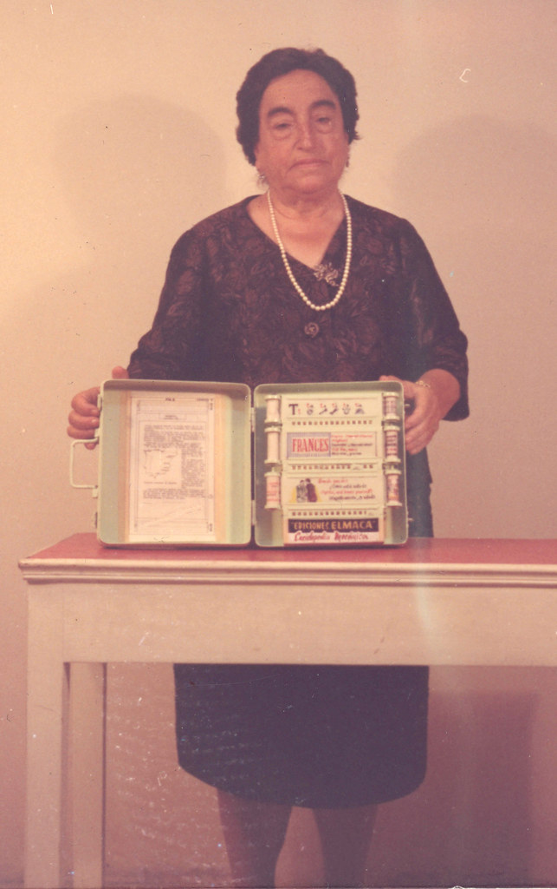
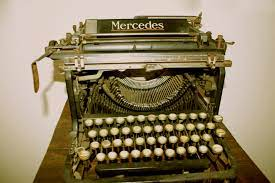

Ángela Ruiz Robles (Villamanín, 28 de marzo de 1895-Ferrol, 27 de octubre de 1975) fue una maestra, escritora e inventora española. Fue la inventora de una enciclopedia mecánica que bien podría considerarse como el primer libro electrónico de la historia, adelantándose en veinte años al dispositivo diseñado en 1971 por el estadounidense Michael Hart y en más de medio siglo a los actuales e-books.
En 1917 fue docente y directora en la Escuela de Gordón, en León. En 1918 obtuvo la plaza de maestra en Santa Eugenia de Mandiá, una aldea próxima a Ferrol. Estuvo allí hasta 1928. El 18 de diciembre de 1925 recibió «una distinción especial por sus indiscutibles méritos en agradecimiento a su dedicación y la atención desinteresada» promovida por sus convecinos.En 1934 realizó una importante labor como gerente de la Escuela Nacional de Niñas del Hospicio. En 1945 fue profesora de la Escuela Obrera gratuita. En 1948 enseñó taquigrafía, ortografía, gramática y mecanografía en el Colegio Ibáñez Martín. En 1959 accedió al cargo de directora, que mantuvo hasta su jubilación.
Entre 1938 y 1946 escribió, dio conferencias, editó y reeditó la mayor parte de su obra científica, un total de dieciséis libros.Sus tres primeros son: Compendio de ortografía castellana, Ortografía castellana y Taquigrafía martiniana abreviada moderna. Impartió clases a opositores de aduanas, correos, telégrafos y para el ingreso en altos estudios mercantiles en la academia para adultos de su propiedad, Elmaca.
Entre 1944 y 1949 llevó a cabo varios proyectos. En 1944 realizó el proyecto del atlas científico-gramatical, con la finalidad de dar a conocer España con gramática, sintaxis, morfología, ortografía y fonética. Después realizó el proyecto de la máquina taquimecanografía.
En 1949 desarrolló la primera propuesta de enciclopedia mecánica. Patentada con fecha 7 de diciembre de 1949, según la patente núm. 190.698. En 1962 se realizó un prototipo de la enciclopedia mecánica, construido en el Parque de Artillería de Ferrol (La Coruña), siendo ella misma quien dirigió los trabajos. Desde el 2006, la Enciclopedia formó parte de la Exposición del Museo Pedagógico de Galicia (MUPEGA) en Santiago de Compostela (La Coruña) hasta el 4 de mayo de 2012, que pasó a la Exposición permanente del Museo Nacional de Ciencia y Tecnología de La Coruña.
